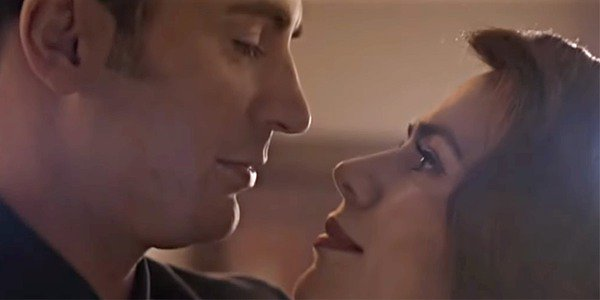

The use of different types of music in media has always been of interest to me. Music can dramatically change the tone of any movie, television show, or even video game it is utilized in. On this website I will include and analyze the use of music in different types of meida, how and how different types of music can convey different emotions and ideas, depending on the type of media it is used in.
It is fascinating how much music can change the tone of a scene. Music can add so much emotion to a scene, as well as totally change the emotion of the scene in question. What I find most fascinating, however, is how the music in a scene can be utilized in so many different ways. For example, Avengers: Endgame (Spoilers!) uses a slow, romantic jazz song to set the tone of the final scene. This choice conveys a lot of emotion, instilling a sort of melancholy happiness in the viewer. It ends the intense, action-packed movie on a calm and happy scene that people have grown to love.
While, in this scene, the music is used to convey joy and